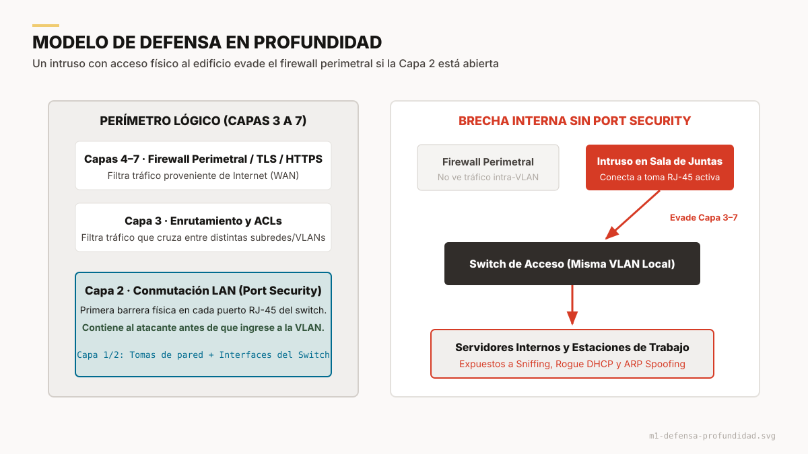
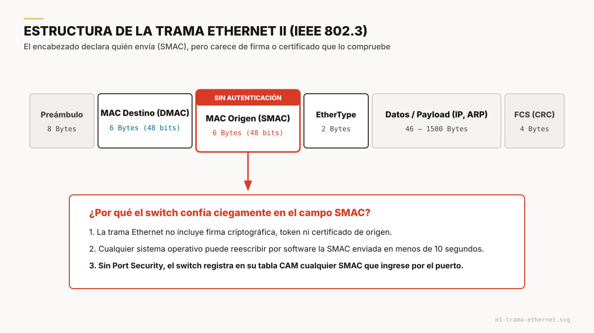
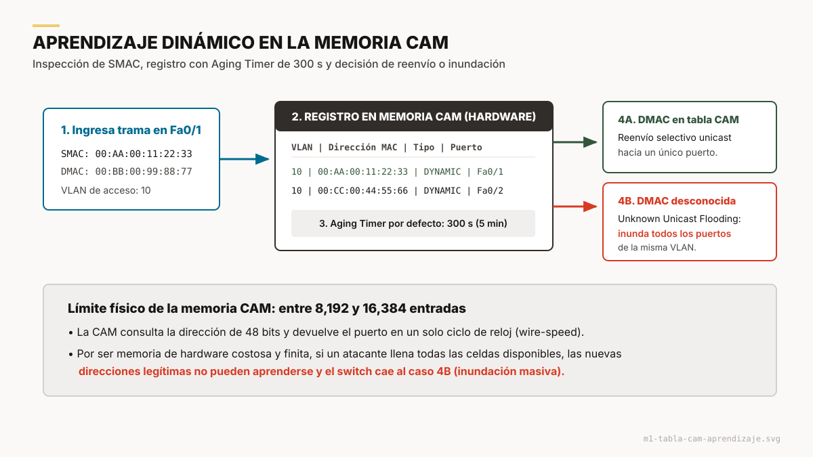
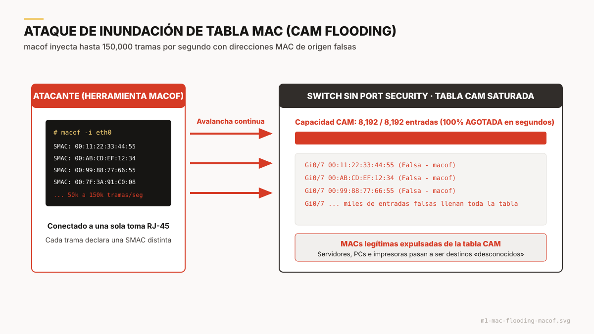
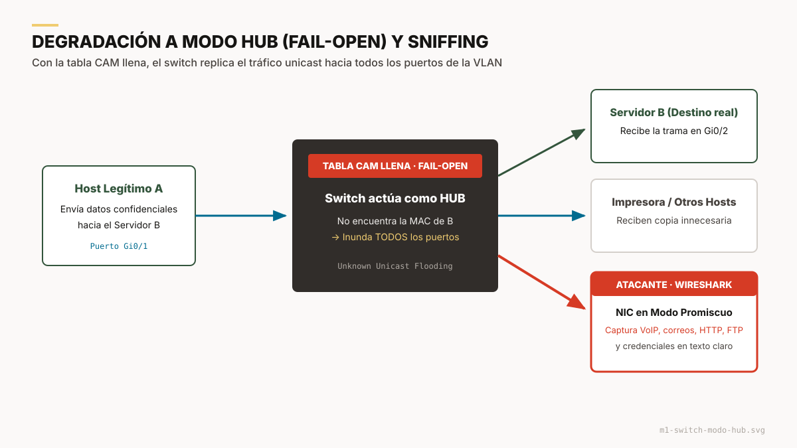
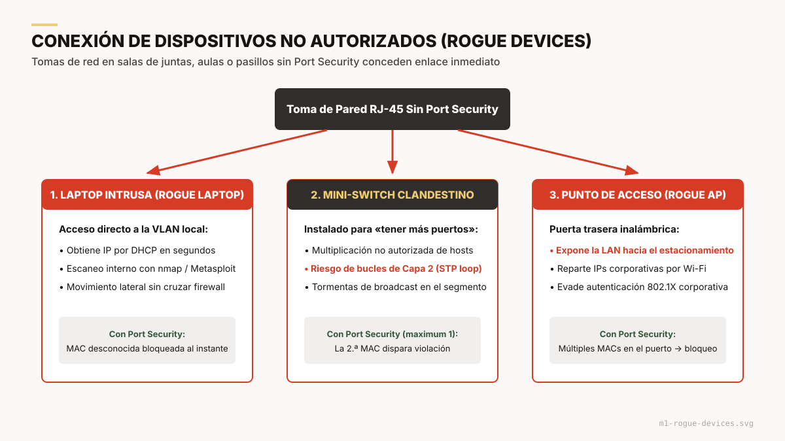
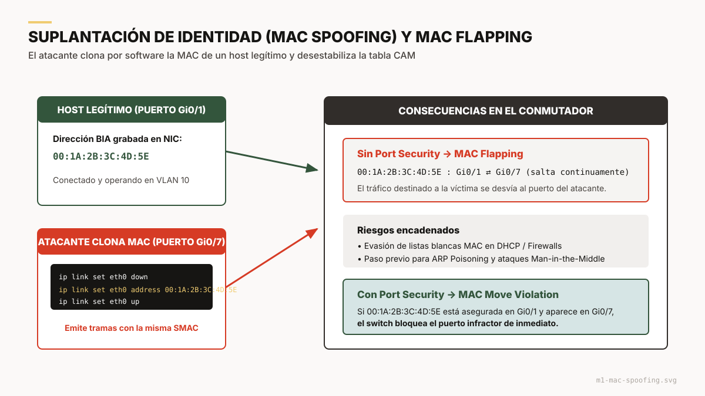

Módulo 1
Fundamentos y vectores de ataque en Capa 2
Por qué la seguridad física y lógica del switch es indispensable, y qué le ocurre a una red cuando se omite Port Security.

1. El problema: la defensa en profundidad empieza abajo
En el diseño tradicional, la seguridad se concentra en el perímetro: firewalls en la frontera con Internet, listas de control de acceso (ACLs) en los routers y cifrado en las capas de Transporte o Aplicación (TLS, SSH, HTTPS).
Esa arquitectura olvida un principio básico: la defensa en profundidad. Si alguien sin autorización obtiene acceso físico o inalámbrico al interior de las instalaciones, todos los controles de las capas 3 a 7 pueden quedar neutralizados cuando la Capa de Enlace (Capa 2) no tiene mecanismos de contención.
Objetivo del módulo
Demostrar por qué la seguridad física y lógica en el switch es indispensable, explicando cómo funcionan los ataques de Capa de Enlace y los riesgos de omitir Port Security.
«La Capa de Enlace de Datos no fue diseñada originalmente pensando en la hostilidad de los entornos modernos. Asume confianza absoluta.» Premisa central para la exposición
2. La vulnerabilidad intrínseca de la Capa 2
Para entender el valor de Port Security hay que conocer cómo opera un switch Ethernet (IEEE 802.3), tanto en lo físico como en lo lógico.
2.1 Confianza heredada de Ethernet
Ethernet nació sobre un medio compartido (bus coaxial y hubs) regido por CSMA/CD. Al migrar a switches, la microsegmentación eliminó las colisiones, pero se heredó el paradigma de confianza ciega:
- Sin autenticación de origen: el encabezado solo trae la MAC de destino (DMAC), la MAC de origen (SMAC) y el EtherType. Nada demuestra que la SMAC pertenece realmente a la tarjeta de red que transmite.
- Aceptación incondicional: el switch da por legítimo a cualquier dispositivo que transmita por un puerto de acceso.


2.2 La memoria CAM y la tabla MAC
El switch conmuta a velocidad de cable gracias a la memoria CAM (Content Addressable Memory). Recibe una dirección MAC de 48 bits y devuelve, en un solo ciclo de reloj, el puerto de salida.
- Inspección de la SMAC: la asocia con el puerto de ingreso y su VLAN.
- Registro: crea la entrada
[VLAN | MAC | Tipo | Puerto]. - Aging timer: cada entrada dinámica vive 300 s por defecto en Cisco y se renueva si el equipo vuelve a transmitir.
- Reenvío o inundación: si el destino es conocido, la trama sale por un solo puerto. Si no, se copia a todos los puertos de la VLAN (unknown unicast flooding).
La limitación crítica del hardware
La CAM es un recurso finito y costoso. Un switch de acceso como el Catalyst 2960 almacena entre 8,192 y 16,384 entradas. Esa capacidad limitada es el punto débil que explotan los ataques de Capa 2.
3. Vectores de ataque al omitir Port Security
Sin Port Security, la infraestructura queda expuesta de inmediato a tres vectores:
| Vector | Impacto primario |
|---|---|
| 1. Inundación de tabla MAC | Fuga de información (sniffing) y denegación de servicio |
| 2. Dispositivos no autorizados | Intrusión física y puertas traseras |
| 3. Suplantación de MAC | Evasión de identidad e inestabilidad |
3.1 Inundación de tabla MAC (CAM flooding)
El atacante conecta un equipo a una toma de pared desprotegida y ejecuta macof (suite dsniff, incluida en Kali Linux). La herramienta genera entre 50,000 y 150,000 tramas por segundo con direcciones MAC de origen y destino aleatorias.
Comportamiento del switch: fail-open
- El switch intenta registrar cada SMAC nueva.
- En milisegundos o segundos, la CAM agota sus entradas.
- Las MAC legítimas de servidores, impresoras y estaciones quedan fuera de la tabla.
- Cuando un equipo legítimo transmite, el destino ya no está en la tabla y el switch lo inunda.
- El switch se comporta como un hub y replica todo el tráfico confidencial hacia todos los puertos.


Intercepción y espionaje masivo
Con Wireshark en modo promiscuo, el atacante recibe todo el tráfico de la VLAN: VoIP sin cifrar, correos y credenciales de protocolos heredados como HTTP, FTP o Telnet.
Denegación de servicio en el switch
El plano de control y la CPU se saturan procesando aprendizajes de direcciones. La latencia se dispara, se pierden paquetes y se caen servicios críticos.
3.2 Conexión de dispositivos no autorizados (rogue devices)
Universidades, corporativos, hospitales y oficinas de gobierno tienen tomas RJ-45 en salas de espera, aulas, salas de juntas y escritorios desocupados. Si el puerto no tiene Port Security:
- Cualquiera puede desconectar una computadora o impresora y conectar su propia laptop.
- El switch da enlace de inmediato, aprende la MAC del equipo ajeno y le permite obtener una IP por DHCP.

Laptops intrusas
Equipos con herramientas como nmap o Metasploit inician el reconocimiento interno y el lateral movement sin pasar por los firewalls perimetrales.
Switches clandestinos
Un empleado instala un switch doméstico para tener «más puertos». Un cable mal conectado provoca bucles de conmutación, satura STP y tumba el segmento.
Puntos de acceso no autorizados
Un router Wi-Fi personal abre una puerta trasera inalámbrica: desde el estacionamiento, cualquiera entra a la red corporativa sin autenticarse.
3.3 Suplantación básica de identidad (MAC spoofing)
La dirección grabada de fábrica en la tarjeta (Burned-In Address, BIA) no es inmutable a nivel de software. En Linux, macOS o Windows, cualquier usuario con privilegios la cambia en menos de 10 segundos:
Ejemplo conceptual en un equipo de pruebas
$ sudo ip link set dev eth0 down
$ sudo ip link set dev eth0 address 00:1A:2B:3C:4D:5E
$ sudo ip link set dev eth0 up- Evasión de listas blancas: clonar la MAC de una impresora o teléfono IP basta para saltar filtros MAC simples en firewalls o DHCP.
- Inestabilidad de la CAM (MAC flapping): la misma MAC aparece en dos puertos, se desvían paquetes hacia el atacante y la víctima pierde comunicación.
- Plataforma para ataques avanzados: es el paso previo al envenenamiento ARP y al Man-in-the-Middle.

4. Matriz de riesgo: con y sin Port Security
| Escenario | Red SIN Port Security (vulnerable) | Red CON Port Security (resiliente) |
|---|---|---|
| Ataque con macof | La CAM se satura en segundos. El switch entra en fail-open (hub) y transmite todo a todos los puertos. | El puerto limita las MAC permitidas (p. ej. 1 o 2). Pasado el límite, descarta las tramas falsas o se bloquea. |
| Laptop de un visitante en sala de juntas | Obtiene conexión inmediata, recibe IP y accede a recursos locales sin protección. | El switch detecta una MAC desconocida y descarta su tráfico (Protect/Restrict) o deshabilita la interfaz (Shutdown). |
| Router Wi-Fi clandestino | El AP reparte IPs por Wi-Fi hacia fuera del edificio sin supervisión. | Detecta varias MAC en la misma interfaz física y la bloquea de inmediato. |
| Suplantación de MAC en otro puerto | La CAM mueve la dirección sin restricción (MAC move), lo que facilita el espionaje. | Se detecta una MAC move violation y se penaliza el puerto infractor. |
| Visibilidad para el administrador | Ninguna alarma. El ataque es silencioso hasta que la red colapsa. | Trampas SNMP, registros Syslog y contadores de violación. |
5. Preguntas detonadoras
Para mantener la atención del grupo antes de pasar a la sintaxis de configuración.
La paradoja del switch inteligente
«Si compramos switches para que el tráfico no se escuche en toda la red como con los viejos hubs, ¿cómo es posible que una herramienta de Linux (macof) convierta nuestro switch de 3,000 dólares en un hub de 10 dólares?»
Respuesta esperada: por el agotamiento de la memoria CAM. Con la tabla llena, el comportamiento por defecto de Ethernet (fail-open) obliga al switch a inundar el tráfico por todos los puertos.
El switch de 5 puertos de la oficina
«Un profesor compra un switch de 5 puertos en una tienda para conectar su computadora, su laptop personal y su consola. ¿Qué problema de seguridad representa y cómo lo detectaría el switch con Port Security?»
Respuesta esperada: con switchport port-security maximum 1, la segunda dirección MAC que aparezca en el puerto dispara la violación de seguridad.
Mito a desmentir
Mito: «Con un buen firewall perimetral y antivirus en las computadoras, no necesitamos Port Security».
Realidad: el firewall nunca ve el tráfico que circula dentro de la misma VLAN. Desde la sala de cómputo, un atacante puede interceptar el tráfico de sus compañeros sin que un solo paquete pase por el firewall.
6. Conclusión
Port Security no es un lujo de configuración avanzada. Es el mecanismo primario de defensa y control de acceso físico de los switches empresariales.
Con estos fundamentos claros, ya se pueden estudiar los mecanismos de aprendizaje de MAC (estática, dinámica y sticky) y, después, los modos de penalización y recuperación.